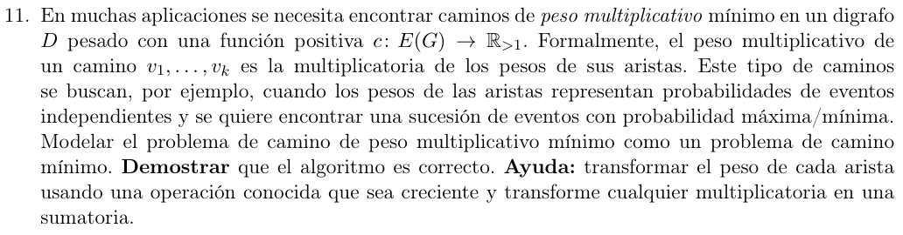

Lo que queremos minimizar es para cada camino \(v_{1.}..v_{k}\)
\[\prod_{i = 1}^{k - 1}c\left( v_{i} \rightarrow v_{i + 1} \right)\]
Y sabemos que \(\log(x \cdot y) = \log x + \log y\),
como el codominio es \({\mathbb{R}}_{> 1}\) entonces \(x < y \Longleftrightarrow \log x < \log y\)
Por lo que para todo par de caminos \(A,B \in G\) vale que:
\[\log(\prod_{a \in A}a) = \sum_{a \in A}\log a\]
\[\prod_{a \in A}a < \prod_{b \in B}b \Longleftrightarrow \sum_{a \in A}\log a < \sum_{b \in B}\log b\]
Armamos \(D'\) tal que para cada \(e \in E(D)\) corresponde un \(e' = e,e' \in E(D')\), y \(c(e') = \log_{b}c(e)\), con \(b > 1\) cualquiera.
Luego podemos usar Dijkstra(\(D',s\)) \(\rightarrow \delta\) (vector de distancias) para cualquier nodo \(s \in V(D)\) y “recuperar” el peso multiplicativo de \(s\) a cualquier \(t \in V(D)\) haciendo
\[b^{\delta(s,t)}\]
La equivalencia de caminos mínimos está justificada en “Cosas útiles”
La solución es correcta porque \[b^{\log_{b}\left( \prod_{a \in A}a \right)} = \prod_{a \in A}a\] done en nuestro caso, \(a = c(v \rightarrow w)\text{ con }v \rightarrow w\) en un camino \(A = s \rightarrow \ldots \rightarrow t\).
En otras palabras, nos devuelve \(\left( s,v_{1} \right) \times (v_{1},v_{2}) \times \ldots \times (v_{k},t)\), donde \(s,v_{1},v_{2.}..v_{k},t\) es el camino que minimiza la suma de los logaritmos del peso de cada arista, que es equivalente al logaritmo del mínimo producto, que es lo que queríamos buscar.